Mikkeller is first and foremost beer. Showcasing all possible styles and ingredients, this is a universe whose endless possibilities include hops, malt, barrel aging, spontaneous fermentation, coffee, passion fruit, cherries, chilli, yuzu, chocolate and more. But it does not stop there.
When the two home brewers, schoolmates and good friends, Morten & Jacob, after a wet city trip in 2007 concluded that Amager missed his own brewery, they had hardly dreamed of where they stood 14 years later. Amager Brygus has been in the top 100 of the world's best breweries for the past 12 years.
Svaneke Brewery is a 100% organic brewery. Here, unfiltered craftbeer is brewed based on five ingredients; water, malt, hops, yeast and time. The Slowbeer philosophy is the secret behind the good beer taste, because the beer is not accelerated. The brewmaster closely follows the beer in the desire for taste balance, and nothing leaves the brewery without his acceptance.

In the autumn of 2018, the first four beers became available and in 2019 we released another 9. Being only two people in the brewery, production is limited. It has been a long, tough and challenging journey. I hope you agree with us, that it was worth all the work and the long waiting time.
The name ÅBEN derives from the Danish phrase 'to be open'. Both the name and design originate from the vision of being open, symbolizing the openness Philip as a founder experienced as a new brewery in the industry. The mantra of openness is fundamental for OPEN.

Small Batch Brewery has been through a rapid development since the start of Hallegård in 2015. The vision was, as part of Hallegaard's food concept, to also brew its own high quality beer. In 2016, Johnny and Anders took over the entire company and moved to their own premises at the harbor in Rønne, where beer is brewed in balance.
Christian Skovdahl Andersen founded Beerhere in 2008 after having left his first brewery and sworn never to get back into the brewing business. However beer brewing is like Eagles' Hotel Califonia, you can check out, but you can never leave, co-located on Bornholm with Penyllan.
OY Brewing is located in the beautiful harbor city Tórshavn on the Faroe Islands. It is newly established from May 2022 and is run by the famous Peter Øl (Peter Beer). The capacity is 1.2 mio l of beer and there is a resturant and a shop as a part of the new brewery.

Yet another game-changer in the history of Mikkeller, the opening of Baghaven marked the moment when - finally - spontaneously fermented sour beer was made using local terroir. American brewer Ehren Schmidt head up operations at Baghaven and helped establish the foundation for a location that would fuse tradition with cutting-edge innovation.
The American brewery 3 Floyds and Danish brewery Mikkeller have built WarPigs Brewpub from scratch to serve authentic Texas barbecue and American-Danish style brews to Copenhagen and the world.